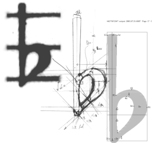
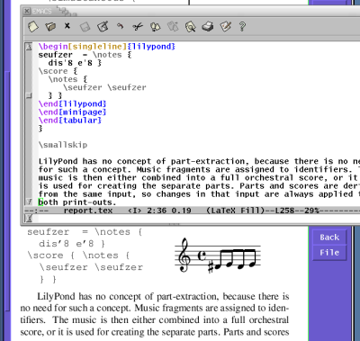

特色
优雅
杰出的古典雕版风格

LilyPond allows musicians to produce elegant sheet music that is easy to read. Its developer community has spent thousands of hours developing powerful music engraving software that results in beautifully engraved music. All of LilyPond’s style settings, font designs and algorithms have been inspired by the finest hand-engraved music. LilyPond output has the same strong, balanced and elegant look as the best-engraved classical scores. This is further explained in our 文章.
有效的版面选择
Spend less time with tweaking the output; LilyPond gets the formatting correct right from the start. It determines spacing by itself, and breaks lines and pages to provide a tight and uniform layout. Clashes between lyrics, notes, and chords are resolved and slurs and beams are sloped, automatically!
易于使用

基于文本的输入
LilyPond takes ASCII input, which you can produce in your favorite text editor, quickly and comfortably. The input contains all the information, so there is no need to remember complex command sequences: simply save a file for later reference.
音乐和文本混合
Put fragments of music into texts without cutting and pasting pictures. Integrate music into LaTeX or HTML seamlessly, or add music to OpenOffice.org with OOoLilyPond. Plugins are also available to allow LilyPond code in various blogs and wikis, making online collaboration possible.
易用性
Text-based input also makes score-writing possible for users with severe physical disabilities. Dexterity-impaired users who are unable to type or control a computer mouse can use speech-recognition software to edit LilyPond files. Even users who are totally blind can use screen-reading software to write LilyPond files – an impossible task in graphical-based score-writing programs.
可扩展的设计
All settings can be changed to suit your personal typographical taste. If that still is not enough, there is always the built-in scripting language Scheme, a dialect of the powerful language LISP. Settings, variables and functions are all documented in the comprehensive program reference manual.
环境

免费的自由软件
LilyPond 是可以免费下载的！没错，是完全免费的，可从下载页获取。
它也是自由软件。It comes with source code, and permission to change and copy it. So, are you irritated by a bug, or yearning for a feature? Simply add it yourself, or pay someone else to do it.
出色的支持
LilyPond runs on all popular platforms: GNU/Linux, Mac OS X, and Windows. LilyPond comes with extensive documentation and 数以百计的范例文件。There is an active user community answering questions on the lilypond-user mailing list, while the development team makes sure that problems are solved quickly.
强大的编辑器
Several developers, themselves active LilyPond users, have also written tools specifically aimed at making the process of editing LilyPond files faster and more effective. For some examples, see 编辑更简单.